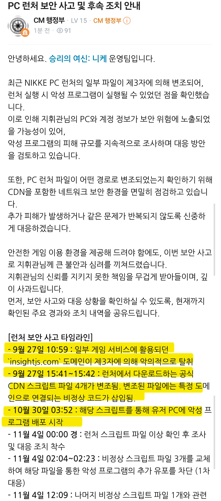
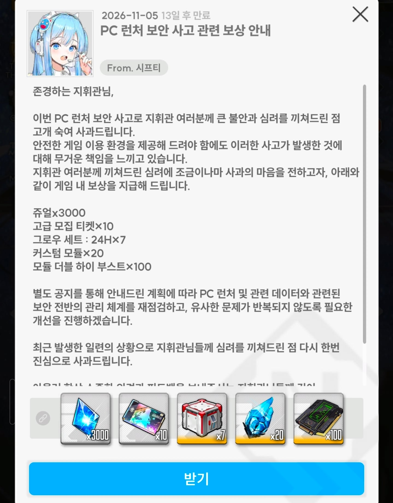

어떻게하면 기업이 게임런처를 털리냐
최초 탈취가 9월27일 ㅋㅋㅋㅋ

어 사료 ㅋㅋㅋ

어떻게하면 기업이 게임런처를 털리냐
최초 탈취가 9월27일 ㅋㅋㅋㅋ

어 사료 ㅋㅋㅋ
이건 니케 잘못이 아니라 텐센트 잘못이잖아ㅋㅋㅋ
솔직히 완전한 책임이 없다고는 못하지만
근데 대충 보니 텐센트 잘못 아닌가 이건 이 게임만 그런 게 아니라 여러개가 그렇던데
니케 말고도 텐센트런처 같이 돌려쓰는 게임 다 털렸다는데 최초 발화지점이 니케커뮤라 다 뒤집어쓴 듯
"사장님 안돼요ㅠ 이러다 저희 망해요ㅠ"
사료받고 홍련 풀돌했다 꺼억
아니 사료만으로 풀돌이 안되는데요......
어허
해킹 발견 <- 유저가 함
해킹 공지 <- 유저가 함
해킹 점검 방법 공지 <- 유저가 함
해킹 이후 조치 방법 공지 <- 유저가 함
해킹 점검 및 조치 프로그램 유포 <- 유저가 함
이런데 개발사가 무죄인게 맞음? ㅋㅋㅋㅋ
ㅋㅋㅋ 개웃기네
유저들이 겜회사 쉴드치는거보면 괜히 유저들 개돼지로 보이는게 아님
대응이 느린건좀 그렇긴한데 보통 플랫폼이 털린거면 거기 입점업체 문제삼지는 않아서 그렇지
유저들이 이상해
소세지 안에 철조각이 발견되어서 이걸 소문내니깐 그 식당에서 시킨사람들이 니가 넣은거 아니냐고 욕하고
이게 한줌단도 아니고 식당 대형 커뮤에서 추천박고 큰소리 떠들었는데도
식당에선 알빠노하고 다음날 자기네들 신메뉴 발표하고있고 ㅋㅋ
그랬는데도 사람들은 대응이 느린 건 '좀' 문제된다고 하고있고 ㅋㅋㅋ
어지럽다 어지러워~
어떻게 생각할지는 몰라도 난 니케안해 그냥 보통 다른사례도 그런식이니까 이야기 한 것 뿐이야
내가볼땐 너가 욕하고싶은데 반응이 이상해서 그러는것 같아보여
이제 이슈가 간단하게 해결되는게 아니고 유저들이 컴퓨터를 포멧하고있는 심각한 상황인데
너처럼 별거 아닌 듯이 '좀' 같은 단어 붙여서 말하는게 화나
무슨 퍼블리셔가 털렸으니 개발사는 문제없다는 식으로 왜 말하는거야 대체
퍼블리셔가 pc클라 만들고 pc클라가 털린건데 그걸 개발사가 어캐 커버를 치냐고..
내가 잘못이없다는식으로 말했다고? 입점 업체보다는 플랫폼문제가 크다고했지? 아니 당연히 저상황에서는 게임사보단 플랫폼이 문제지 그럼 뭐라그럼?
따지면 식당이 이슈가 아니라 니가 배달을 시켰는데
식당은 음식을 메뉴를 추가한거고
배달하던 배달원이 음식에 독을 넣은건데
그걸 식당책임하는건...
그걸 받은 몰랐던 식당은 고객에게 배달해서 고객은 독이있다고 동네방네 떠들었는데
좆까고 다음날 자기네들 신메뉴 발표한건 왜 무시해
소문듣고 바로 공지올려야 피해를 축소하지
조치하고 공지올린거임..조치까진 하고 올려야지......님들 우리좆되었어요 라고 공지올리는건 지금 공격하세요
이거밖에안댐
신메뉴 타이밍이 나쁜건 맞는데 걔네 개발팀과 모든건 일정일거고 pc클라는 자기들이 할수없는 부분이니까
퍼블리셔랑 개발사랑 힘이 누가 쌘지 생각해보셈...
대댓 너무 많아서 슬슬 답변달기힘드네 ...
조치하기전에 pc 클라 건들지 말라고 공지 올려야지 무슨소리야 ...;;
난 말이지 지금 너처럼 왜이렇게 게임사를 쉴드치는 도저히 이해가 안돼
사태가 엄청 심각한데 일정 맞추자고 업뎃공지 올린다고하고있고
퍼블리셔가 더 힘쌔니깐 힘약한 개발사는 이해해줘야지 << 대체 이게 어떻게 고객 입에서 나오는거지
포멧당한 피해자들이 다 저렇게 이해해주면 난 제3자니깐 할말이 없긴하겠지만 참 ..
스팀이 털렸는데 스팀이 공지를 먼저 해야지;;;
스팀에서 서비스중인 게임이 먼저 공지를 던지는 경우가 어디있음
비즈니스 적으로 걍 그렇게 던지면
의혹 제기밖에 안되는거임
스팀에서 이상한 점을 발견했다고 유저들한테 바로 공지때리면
스팀에서 아니 그거 취약점 아니고 단순히 우리 정상적인 코드라고 주장할 수도 있는건데
스팀에 입점해 있는 게임사가 어떻게 스팀이랑 회의나 연락 안하고 먼저 공지를 올리겠냐고
자기들 신메뉴 발표한건 예약 포스트일거 뻔하고
바쁘니깐 찐빠 난거지
이거 가지고 나는 욕하고 싶진 않음 그만큼 정신없이 회의하고 대처파악하고 있었다는 뜻이니깐
난 너처럼 고객이 게임사를 이해하려는게 이해가 안가
고객 입장에선 그 원인의 주체가 퍼블리셔던 게임사던 결국 눈앞에 보이는건 게임사인데
왜 이걸 이러한 이유 저러한 이유를 들며 어쩔수없다는식으로 보는거지?
고객사랑 퍼블리셔랑 분리하는게 왜 이상한지 모르겠네
친절하게 스팀으로 예시 들어줬잖아
스팀이 문제면 스팀 욕하는게 정상이지
스팀에 게임 올린 게임사를 욕하는게 정상임?
"스팀에서 서비스중인 게임이 먼저 공지를 던지는 경우가 어디있음" << 난 이러한 경우는 모르겠음
게임사가 먼저 공지 때려야하는게 아님? 이건 내가 스팀구조를 모르네
그리고 저 이슈를 처음 발견한게 니케갤러리인데 그렇게 소문냈으면
니케쪽에서 조사를 한다고 공지를 띄어야하는게 당연한거 아닌가?
설령 너가 예시로 든 스팀에서 문제가 아니라고했다고 유저들의 의심이 사라지는건 아닌데?
자 생각이란걸 해봅시다
아무리 의문을 제기한 유저가 정말 코드에 통달하고 보안 전문가라고 해도
내부 코드를 전부 들여다본게 아니기 때문에
그게 정말 확실하게 클라이언트에서 문제가 생긴건지 파악을 할 수 없고
회사입장에서는 '개인의 추측이고 가설임'
자체적인 검증이 필요하지
커뮤니티에서 아무리 사실이라고 해도 회사에서 공지를 때리기 위해서는
자체적으로 검증을 하고 사실확인을 해야겠지요?
근데 스팀이 서비스하는 걸 게임사가 어떻게 사실확인을 하겠어요?
연락이나 이메일로 해서 알아내야겠죠?
협력사가 조사중이라고 하면 게임사가 그냥 사실 확인도 안하고 공지를 띄우겠냐고요
사실 확인도 없이 섣부르게 공지를 띄웠다가
나중에 "알고 보니 스팀의 정상적인 동작이었다"거나
"클라이언트 문제가 아니었다"로 밝혀지면
그로 인한 법적 책임과 비즈니스적 신뢰도 타격은 게임사가 온전히 뒤집어쓰는건데
그리고 회사를 안다니시는건지 아니면 뭔지 모르겠는데
조사를 하겠습니다 공지 띄우는거 어렵냐 이러는데
공지 == 공식 입장인거임 이걸 생각해야지
인원 5~10명의 소규모 게임사면 모르겠는데
시프트업 같은 좀 규모가 있는 기업은 공지를 쉽게 못쓰지
문제가 실제로 존재하는지조차 파악되지 않은 단계에서
"이슈가 제기되어 조사 중입니다"라고 공지를 띄우면
유저들한테 불필요한 공포와 대혼란만 주는거고
정확한 원인 파악과 대처 방안이 정리되었을 때
공지 하는게 정석적인 리스크 관리임
열심히 써준건 고맙긴하지만
다시 돌아와서 왜 그렇게 쉴드를 쳐주는거냐는거임
당연히 절차야 있겠지 왜 몰라?
보안이슈때문에 포멧한 고객들은 아~ 그러한 이유때문에 털렸고 공지를 안띄었구나라고 이해해야한다는거임?
게임사야 억울할수야 있겠지 근데 그 절차때문에 공지를 못보고 중간에 다운로드한 유저는?
확실하지야 않을수있겠지만 이슈터진게 오후9시더만?
커뮤니티는 불타고있는데 업뎃 예약포스트인지뭔지 놔두고 입꾹닫하고있다가
그제서야 말해? 도저히 이해가 안가
나도 내컴퓨터 포멧하긴 했지만
자연재해 같은 상황에서 누구를 욕하고 할 상황은 아니라고 생각하는거임
애초에 욕을 할꺼면 털린 텐센트를 욕하는게 맞다는 입장인거고
너가 이해 안가면 이해 안해도 됨
정확하게 보면 원글 처음 나온게 새벽 4시 즈음이고
이후에 6시즈음에 다른 유저들도 테스트하면서 확인했고
이게 맞다고 갤에 글 쓰기 시작했고
사건이 알려지기 시작하자 해커는 도메인 닫고 도망갔고
사람 있는 커뮤들에 퍼지기 시작한건 8~9시즈음임
텐센트 공지는 12시 즈음 올라왔고
니케 x 공지는 2~3시즈음에 올라왔고 동시에 클라이언트 수정 작업 시행한다고 올라옴
여기서 대응이 뭐가 부족한지 모르겠음
충분히 검증할거 검증하고 최대한 빠르게 공지한건데
내말은 그냥 커뮤에서 이거 해킹이라고 한다고 글 보고
바로 기업에서 아 해킹 같으니깐 다들 멈추세요 했는데
나중에 아 아니네? ㅈㅅ 이러는게 맞다고 생각함?
나는 오히려 파악할거 파악하고 혹시 유저가 발견 못한 추가 취약점 파악하고 공지 올리는게 더 맞다고 보는데
커뮤 불타고 있는건 불타고 있는거고
정확하게 파악을 해야지 추가 피해나 혹시 모를 취약점들 다시 파악하지
물론 이것도 시프트업에서 파악하는게 아니라 텐센트가 해야하는거고
너가 말한 타임라인으로 보면 커뮤에 퍼지기 시작한 최소 9시에 조사 공지는 내렸었어야한다고봄
그게 퍼블리셔와 게임사의 계약간 문제건 뭐건 고객은 신경 쓸 건아니라고보고
그리고 니가 6시쯤에 유저들이 테스트까지해서 확인했다며?
단순 의혹을 넘어서 물증까지 나온 상황인데 무시하고 지나치는게 정상은 아니라고봄
결과론이라곤하나 결국 보안은 털린거임 그것도 심각하게
난 이걸 고객들이 이러한 저러한 이유때문에 공지를 늦게 올릴수 밖에 없다고 쉴드 치는 이 상황들이
더더욱 이해안되고 앞으로도 개돼지라고 생각할 듯
아무리 설명해도 답 정해둔 사람이었구나
물증이 나온게 유저들끼리 이런게 있다는거 파악한거지
시프트업이랑 레벨인피니트가 파악한게 아니잖니?
내가 계속 이야기 하는거지만
커뮤에서 도는 찌라시 가지고 공지 올릴 수 있는 규모있는 기업들 니가 찾으면 내가 인정해줄께
아무리 유저가 정확한 정보를 찾아냈다고 하더라도
만약 텐센트 측에서 정상적인 작동이라고 하면 뭐라고 할건데
게임사가 뭐라고 할 수 있는데
그리고 계속 공지 늦었다 이러는데
비즈니스 적으로 조사 공지는 올리기 쉽지 않은거고
이슈 제보 확인 -> 내부 재현 및 코드 검증 -> 퍼블리셔/개발사 긴급 회의 -> 패치 코드 작성 및 QA -> 배포 및 공지
이 과정 겪었을텐데 이걸 3~5시간 안에 완료하고 패치까지 진행한건데
뭐가 정상이 아니야 진짜 회사 안다녀본 티낼래?
보안 털린건 텐센트라고 수십번 이야기해도
게임사도 잘못이다라고 하는건 이해가 안된다 이말임
시프트업이 레벨인피니트 서버도 관리하면 몰라 서버 로그를 볼 수 있는거면 몰라
걍 분리되어 있고 게임만 만드는 회사인데
개발사가 욕을 먹어야 하는 이유가 뭔데
계약이 뭐가 문제건 고객은 신경쓸건 아니다 이러는데
내가 고객인데 나는 저런 상황 고려해서 시프트업쪽에 욕안하고 텐센트 욕하겠다는건데
뭔 개돼지 타령이야
아니;; "너가 이해 안가면 이해 안해도 됨" 이렇게 말해서 나도 결론을 정한건데 답정한 사람이 있다고 말하면 ㅋㅋ
더 말해봐야 서로 똑같은 말만 하니깐 나도 그만 적을게
옹호하는사람들 개돼지라고 답 정해둔거 같아서 답 정해놨구나 한거고
사건 전말에 대해서 이해 안해도 되지만 정상참작의 사유가 있다는 의미인거고
다른 의미임
난 대체 지금 저 사람하고 싸우는 이유를 모르겠음. 저런 유저를 거르지 못한 개드립을 욕하면 되는거 아님? 유저 입장에서는 어쨋든 관리 못한 개드립이 눈앞에 보이는데
카바치려는건 아니지만 현재는 모든 게임사가 해킹방어 역량이 저정도 수준일거임. 조심들 하셈. 해외겜들도 클라이언트 방어력 형편없는것들 많고
나도 예전에 겜하다가 해킹여러번 당했었는데 겜접은 이후론 해킹 거의 당한적이 없음
PC클라 만들고 배포하는 건 중국 텐센트 쪽이니까 그 쪽 욕해야지 시프트업 욕하는 게 맞음? 하는 사람도 있더라.
그..이번에 이슈된건 pc클라니까요...
그..개발사랑 퍼블리셔를 구분하셔야함
발견한 사람 분탕몰이 후 밝혀지니 완장들 런 - 유저가함
미호요마냥 자체 PC 클라였으면 모를까 퍼블리셔쪽 문제면 개발사에 죄를 묻기도 애매지않음?
승니견이나 기무라횬타이 존나싫어하는데도 딱히 이사건으로 이쪽 욕할생각은 안들던데
결국 저것들은 텐센트(레벨인피니트)가 했어야하는게 맞다고 생각함
바이러스 뿌려놓고 보상으로 사료 주는 거 보면 유저들 멘탈도 이미 강제 포맷됐을 듯 ㅋㅋ
공급망 공격은 클라이언트(유저)는 뭘 할 수 있는게 없긴해...
공격당한 경위가 궁금하긴하네
시프트업이든 레벨인피니트든 대응과정이 미흡한건 사실이라, 벌금은 맞을거 같고,
니케를 안하니 적절한 보상인지도 모르겠네
사료 덕분에 마리안 풀돌 했다 개꿀
이미 갤이나 챈에는 '보상도 뿌렸고 사과도 했는데 할 수 있는거 다 한거 아님? 너 왜 깜? 승니견이지?' 아직도 ㅇㅈㄹ하는 개돼지들 밖에 없음 ㅋㅋ 게임 쭉 잘나갈듯
승니견이 선녀가되버리게된 사건임ㅋㅋㅋ
텐~센트